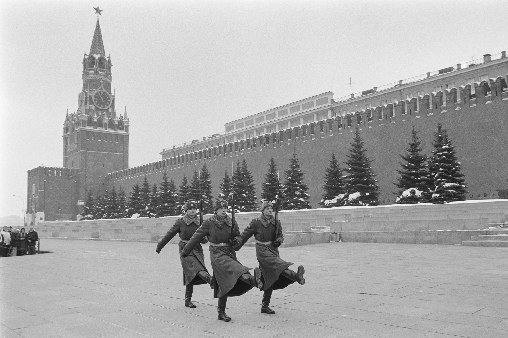

Books
Five of my favourite books from my favourite genres.

Economics
- The Mystery of Banking - Murray N. Rothbard
- An Economic History of the USSR, 1917-1991 - Alex Nove
- The Economics and Politics of Race - Thomas Sowell
- The Wealth of Nations - Adam Smith
- Basic Economics - Thomas Sowell
History
- A People's Tragedy: The Russian Revolution, 1891-1924 - Orlando Figes
- The English and their History - Robert Tombs
- The Cold War: A World History - Odd Arne Westad
- The Shortest History of Germany - James Hawes
- Guns, Germs and Steel - Jared Diamond
Psychology and Philosophy
- The Gulag Archipelago - Aleksandr Solzhenitsyn
- On Liberty - John Stuart Mill
- Man's Search For Meaning - Viktor E. Frankl
- Beyond Good and Evil - Friedrich Nietzsche
- The Archetypes and the Collective Unconscious - Carl Jung
Fiction
- The Count of Monte Cristo - Alexandre Dumas
- Don Quixote - Migel de Cervantes
- Crime and Punishment - Fyodor Dostoyevsky
- The Picture of Dorian Gray - Oscar Wilde
- Great Expectations - Charles Dickens
Reading List
- The Templars - Dan Jones
- The Norman Conquest - Migel de Cervantes
- Confessions - Saint Augustine
- Reflections on the Revolution in France - Edmund Burke
- Notes from Underground - Fyodor Dostoyevsky